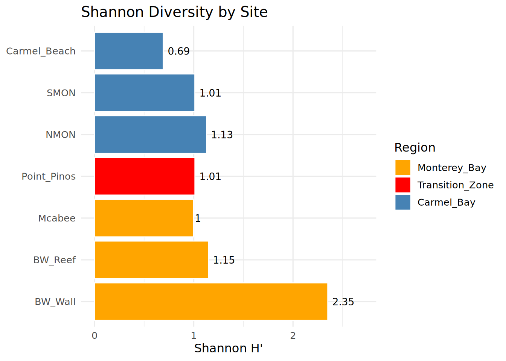
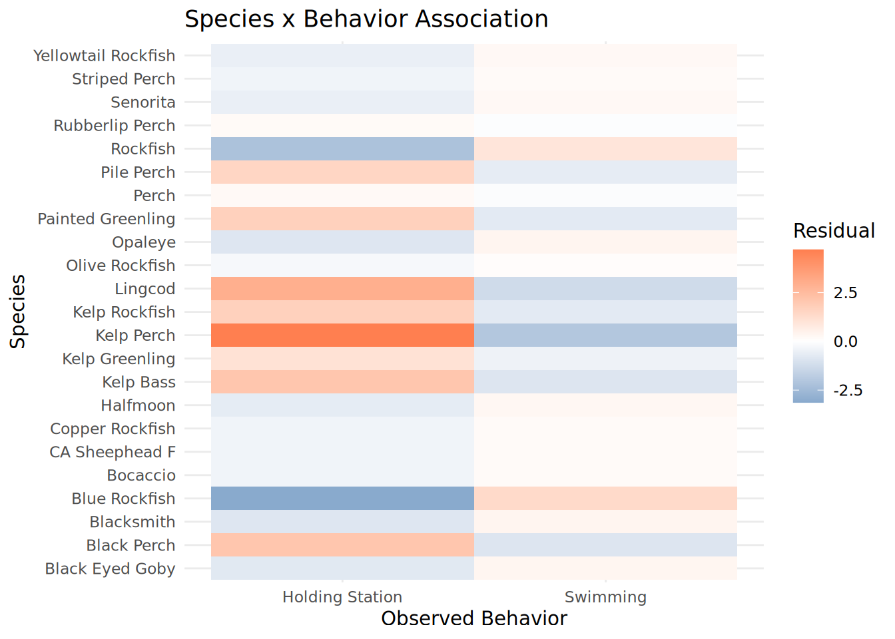
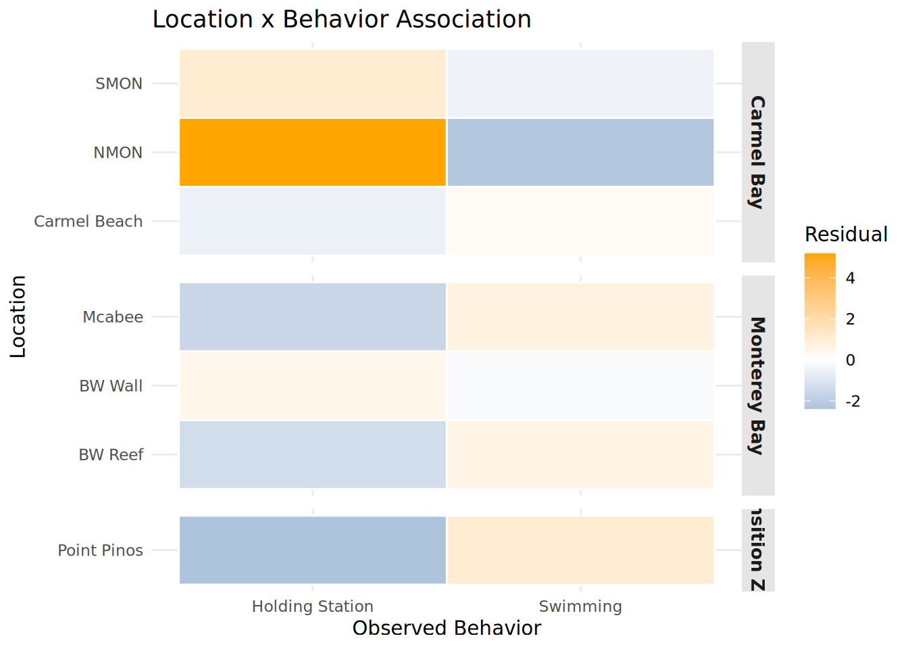
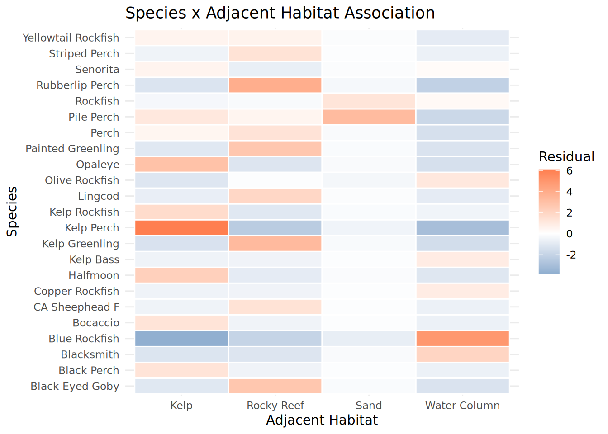
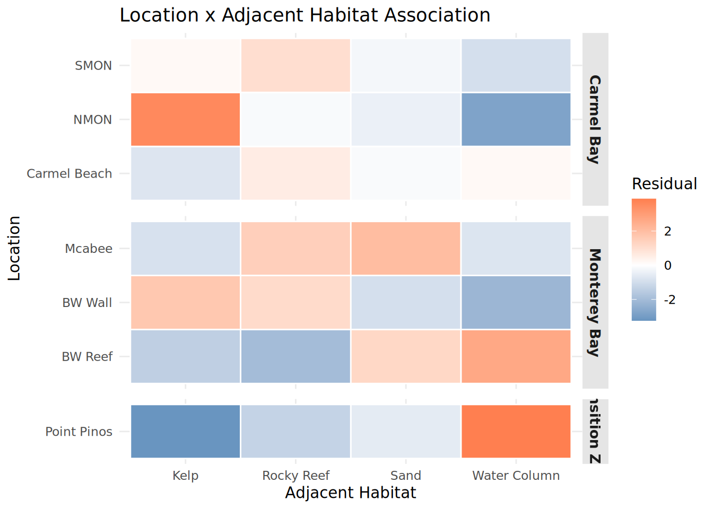
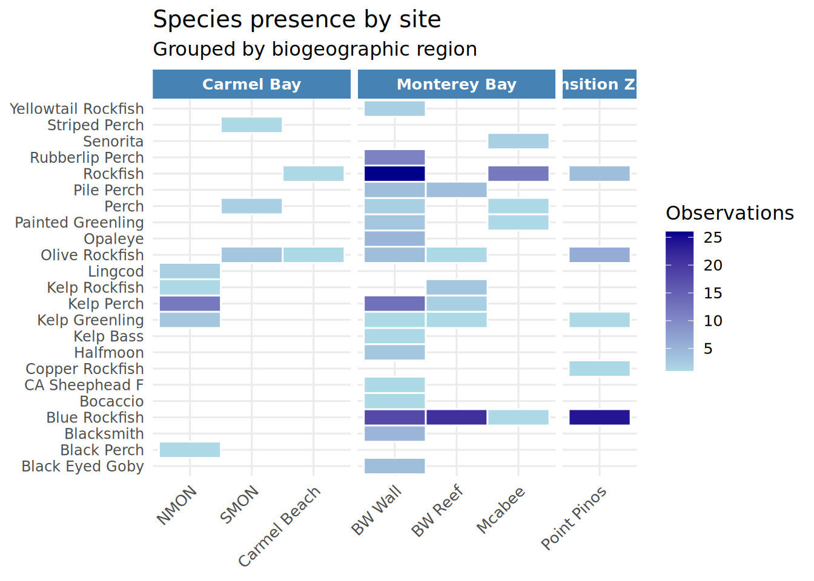
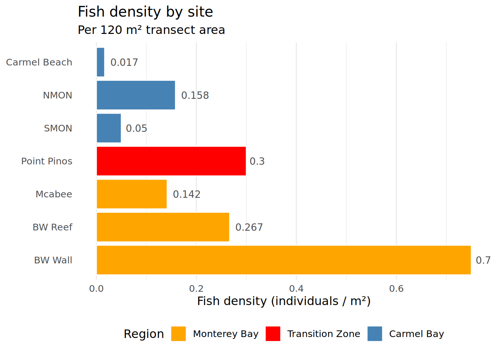
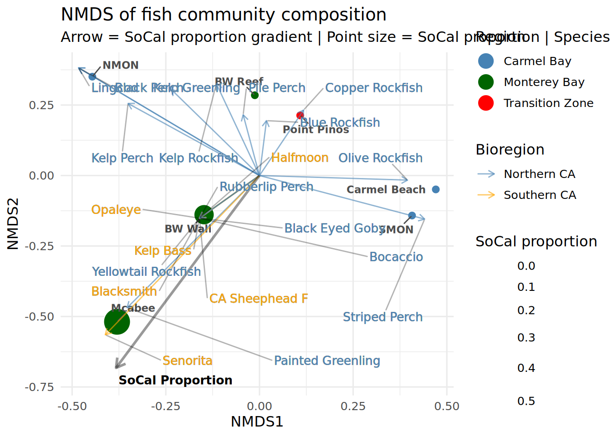
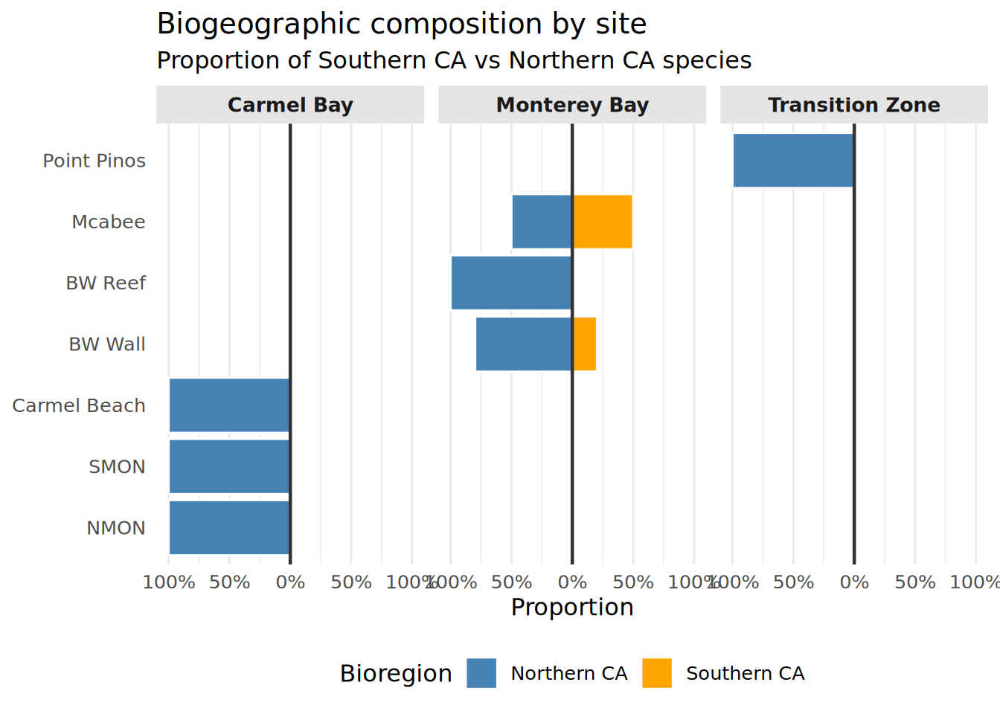

library(ggrepel)
library(ggpmisc)
library(tidyverse)
library(vegan)Stat 210 Final Project
Load Libraries
Loading in CSV’s
Fish <- read.csv("Group_3_Mastersheet.csv")Cleaning Data
Fish_Cleaned <- Fish %>%
select(Location, Species, Observed_Behavior, Adjacent_Habitat) %>%
mutate(Location = recode(Location, "McAbee" = "Mcabee"),
Species = recode(Species, "Black_Eyed_Goby" = "Black_Eyed_Goby"))
# added Northern California/Southern California
Fish_Cleaned_2 <- Fish_Cleaned %>%
filter(!str_detect(Species, "YOY|UFO")) %>%
mutate(Region = case_when(
Location %in% c("NMON", "SMON", "Carmel_Beach") ~ "Carmel_Bay",
Location %in% c("BW_Wall", "BW_Reef", "Mcabee") ~ "Monterey_Bay",
Location == "Point_Pinos" ~ "Transition_Zone",
TRUE ~ NA_character_),
Species = recode(Species, "Black_Eyed_Goby" = "Black_Eyed_Goby")
)Diversity by Site
# Shannon diversity by individual site
# Build a species x site abundance matrix
species_matrix <- Fish_Cleaned_2 %>%
group_by(Location, Species) %>%
summarise(count = n(), .groups = "drop") %>%
pivot_wider(names_from = Species, values_from = count, values_fill = 0) %>%
column_to_rownames("Location")
# Calculate Shannon H' per site
shannon <- diversity(species_matrix, index = "shannon")
shannon_df <- shannon %>%
as.data.frame() %>%
rownames_to_column("Location") %>%
rename(Shannon = ".") %>%
left_join(
Fish_Cleaned_2 %>% distinct(Location, Region),
by = "Location"
)
print(shannon_df) Location Shannon Region
1 BW_Reef 1.1481647 Monterey_Bay
2 BW_Wall 2.3506162 Monterey_Bay
3 Carmel_Beach 0.6931472 Carmel_Bay
4 Mcabee 0.9976149 Monterey_Bay
5 NMON 1.1285963 Carmel_Bay
6 Point_Pinos 1.0121571 Transition_Zone
7 SMON 1.0114043 Carmel_BayDiversity by Region
# Build species x region abundance matrix
Region_Matrix <- Fish_Cleaned_2 %>%
group_by(Region, Species) %>%
summarise(count = n(), .groups = "drop") %>%
pivot_wider(names_from = Species, values_from = count, values_fill = 0) %>%
column_to_rownames("Region")
# Calculate Shannon diversity per region
shannon_region <- diversity(Region_Matrix, index = "shannon")
# Convert to tidy dataframe
shannon_df <- shannon_df %>%
mutate(Location = factor(Location, levels = c(
"BW_Wall", "BW_Reef", "Mcabee", # Monterey Bay
"Point_Pinos", # Transition Zone
"NMON", "SMON", "Carmel_Beach" # Carmel Bay
)),
Region = factor(Region, levels = c("Monterey_Bay", "Transition_Zone", "Carmel_Bay")))
# View results
print(shannon_df) Location Shannon Region
1 BW_Reef 1.1481647 Monterey_Bay
2 BW_Wall 2.3506162 Monterey_Bay
3 Carmel_Beach 0.6931472 Carmel_Bay
4 Mcabee 0.9976149 Monterey_Bay
5 NMON 1.1285963 Carmel_Bay
6 Point_Pinos 1.0121571 Transition_Zone
7 SMON 1.0114043 Carmel_BayShannon Diversity by Site
ggplot(shannon_df, aes(x = Location, y = Shannon, fill = Region)) +
geom_col(color = "white", linewidth = 0.5) +
geom_text(aes(label = round(Shannon, 2)), hjust = -0.2, size = 3.5) +
scale_fill_manual(values = c(
"Carmel_Bay" = "steelblue",
"Monterey_Bay" = "orange",
"Transition_Zone" = "red"
)) +
coord_flip() +
theme_minimal(base_size = 12) +
theme(legend.position = "right") +
expand_limits(y = max(shannon_df$Shannon) * 1.15) +
labs(
title = "Shannon Diversity by Site",
x = NULL,
y = "Shannon H'",
fill = "Region"
)
Species Richness
# Richness per site
richness_site <- Fish_Cleaned_2 %>%
group_by(Location, Region) %>%
summarise(Richness = n_distinct(Species), .groups = "drop")
# Richness per region
richness_region <- Fish_Cleaned_2 %>%
group_by(Region) %>%
summarise(Richness = n_distinct(Species), .groups = "drop")
# View results
print(richness_site)# A tibble: 7 × 3
Location Region Richness
<chr> <chr> <int>
1 BW_Reef Monterey_Bay 6
2 BW_Wall Monterey_Bay 17
3 Carmel_Beach Carmel_Bay 2
4 Mcabee Monterey_Bay 5
5 NMON Carmel_Bay 5
6 Point_Pinos Transition_Zone 5
7 SMON Carmel_Bay 3print(richness_region)# A tibble: 3 × 2
Region Richness
<chr> <int>
1 Carmel_Bay 9
2 Monterey_Bay 19
3 Transition_Zone 5Diversity Dataframe
diversity_summary <- shannon_df %>%
left_join(richness_site, by = c("Location", "Region"))
print(diversity_summary) Location Shannon Region Richness
1 BW_Reef 1.1481647 Monterey_Bay 6
2 BW_Wall 2.3506162 Monterey_Bay 17
3 Carmel_Beach 0.6931472 Carmel_Bay 2
4 Mcabee 0.9976149 Monterey_Bay 5
5 NMON 1.1285963 Carmel_Bay 5
6 Point_Pinos 1.0121571 Transition_Zone 5
7 SMON 1.0114043 Carmel_Bay 3Data Cleaning For Behavior Associations
# Remove YOY, UFO, and any blank/NA entries
Fish_Cleaned_3 <- Fish_Cleaned_2 %>%
filter(!str_detect(Species, "YOY|UFO")) %>%
filter(Species != "" & !is.na(Species)) %>%
filter(Observed_Behavior != "" & !is.na(Observed_Behavior)) %>%
mutate(Species = recode(Species, "Black_Eyed_Gobeye" = "Black_Eyed_Goby"))
# Check what you're working with
unique(Fish_Cleaned_3$Species) [1] "Bocaccio" "Blue_Rockfish" "Pile_Perch"
[4] "Rockfish" "Olive_Rockfish" "Perch"
[7] "Kelp_Perch" "Painted_Greenling" "Yellowtail_Rockfish"
[10] "Kelp_Greenling" "Rubberlip_Perch" "Kelp_Bass"
[13] "CA_Sheephead_F" "Black_Eyed_Goby" "Halfmoon"
[16] "Opaleye" "Blacksmith" "Kelp_Rockfish"
[19] "Lingcod" "Black_Perch" "Striped_Perch"
[22] "Senorita" "Copper_Rockfish" unique(Fish_Cleaned_3$Observed_Behavior)[1] "Swimming" "Holding_Station"Behavior Associations
# Behavior x Species
behavior_species <- Fish_Cleaned_3 %>%
count(Species, Observed_Behavior) %>%
pivot_wider(names_from = Observed_Behavior, values_from = n, values_fill = 0) %>%
column_to_rownames("Species")
chisq_species <- chisq.test(behavior_species)Warning in chisq.test(behavior_species): Chi-squared approximation may be
incorrectprint(chisq_species)
Pearson's Chi-squared test
data: behavior_species
X-squared = 81.097, df = 22, p-value = 1.068e-08fisher_species <- fisher.test(behavior_species, simulate.p.value = TRUE, B = 10000)
print(fisher_species)
Fisher's Exact Test for Count Data with simulated p-value (based on
10000 replicates)
data: behavior_species
p-value = 9.999e-05
alternative hypothesis: two.sidedBehavior x Location
behavior_location <- Fish_Cleaned_3 %>%
count(Location, Observed_Behavior) %>%
pivot_wider(names_from = Observed_Behavior, values_from = n, values_fill = 0) %>%
column_to_rownames("Location")
chisq_location <- chisq.test(behavior_location)Warning in chisq.test(behavior_location): Chi-squared approximation may be
incorrectfisher_location <- fisher.test(behavior_location, simulate.p.value = TRUE, B = 10000)Species x Behavior Heatmap
Species_Behavior_Heatmap <- chisq_species$residuals %>%
as.data.frame() %>%
rownames_to_column("Species") %>%
pivot_longer(-Species, names_to = "Observed_Behavior", values_to = "Residual") %>%
mutate(
Species = str_replace_all(Species, "_", " "),
Observed_Behavior = str_replace_all(Observed_Behavior, "_", " ")
) %>%
ggplot(aes(x = Observed_Behavior, y = Species, fill = Residual)) +
geom_tile() +
scale_fill_gradient2(low = "steelblue", mid = "white", high = "coral", midpoint = 0) +
theme_minimal() +
labs(title = "Species x Behavior Association",
x = "Observed Behavior", y = "Species")
print(Species_Behavior_Heatmap)
ggsave("Species_Behavior_Heatmap.pdf", plot = Species_Behavior_Heatmap, width = 10, height = 8, dpi = 300)Location x Behavior Heatmap
Location_Behavior_Heatmap <- chisq_location$residuals %>%
as.data.frame() %>%
rownames_to_column("Location") %>%
pivot_longer(-Location, names_to = "Observed_Behavior", values_to = "Residual") %>%
left_join(
Fish_Cleaned_3 %>% distinct(Location, Region),
by = "Location"
) %>%
mutate(
Location = str_replace_all(Location, "_", " "),
Observed_Behavior = str_replace_all(Observed_Behavior, "_", " "),
Region = str_replace_all(Region, "_", " ")
) %>%
ggplot(aes(x = Observed_Behavior, y = Location, fill = Residual)) +
geom_tile(color = "white", linewidth = 0.5) +
scale_fill_gradient2(low = "steelblue", mid = "white", high = "orange", midpoint = 0) +
facet_grid(Region ~ ., scales = "free_y", space = "free_y") +
theme_minimal() +
theme(
strip.background = element_rect(fill = "gray90", color = NA),
strip.text = element_text(face = "bold", size = 10),
panel.spacing = unit(0.5, "lines")
) +
labs(title = "Location x Behavior Association",
x = "Observed Behavior", y = "Location")
print(Location_Behavior_Heatmap)
ggsave("Location_Behavior_Heatmap.pdf", plot = Location_Behavior_Heatmap, width = 10, height = 8, dpi = 300)Adjacent Habitat x Species
habitat_species <- Fish_Cleaned_3 %>%
count(Species, Adjacent_Habitat) %>%
pivot_wider(names_from = Adjacent_Habitat, values_from = n, values_fill = 0) %>%
column_to_rownames("Species")
fisher_habitat_species <- fisher.test(habitat_species, simulate.p.value = TRUE, B = 10000)
print(fisher_habitat_species)
Fisher's Exact Test for Count Data with simulated p-value (based on
10000 replicates)
data: habitat_species
p-value = 9.999e-05
alternative hypothesis: two.sidedAdjacent Habitat x Location
habitat_location <- Fish_Cleaned_3 %>%
count(Location, Adjacent_Habitat) %>%
pivot_wider(names_from = Adjacent_Habitat, values_from = n, values_fill = 0) %>%
column_to_rownames("Location")
fisher_habitat_location <- fisher.test(habitat_location, simulate.p.value = TRUE, B = 10000)
print(fisher_habitat_location)
Fisher's Exact Test for Count Data with simulated p-value (based on
10000 replicates)
data: habitat_location
p-value = 9.999e-05
alternative hypothesis: two.sidedchisq_habitat_species <- chisq.test(habitat_species)Warning in chisq.test(habitat_species): Chi-squared approximation may be
incorrectHabitat x Species heatmap
Habitat_Species_Heatmap <- chisq_habitat_species$residuals %>%
as.data.frame() %>%
rownames_to_column("Species") %>%
pivot_longer(-Species, names_to = "Adjacent_Habitat", values_to = "Residual") %>%
mutate(
Species = str_replace_all(Species, "_", " "),
Adjacent_Habitat = str_replace_all(Adjacent_Habitat, "_", " ")
) %>%
ggplot(aes(x = Adjacent_Habitat, y = Species, fill = Residual)) +
geom_tile(color = "white", linewidth = 0.5) +
scale_fill_gradient2(low = "steelblue", mid = "white", high = "coral", midpoint = 0) +
theme_minimal() +
labs(title = "Species x Adjacent Habitat Association",
x = "Adjacent Habitat", y = "Species")
print(Habitat_Species_Heatmap)
ggsave("Habitat_Species_Heatmap.pdf", plot = Habitat_Species_Heatmap, width = 10, height = 8, dpi = 300)Habitat x Location heatmap
chisq_habitat_location <- chisq.test(habitat_location)Warning in chisq.test(habitat_location): Chi-squared approximation may be
incorrectHabitat_Location_Heatmap <- chisq_habitat_location$residuals %>%
as.data.frame() %>%
rownames_to_column("Location") %>%
pivot_longer(-Location, names_to = "Adjacent_Habitat", values_to = "Residual") %>%
left_join(Fish_Cleaned_3 %>% distinct(Location, Region), by = "Location") %>%
mutate(
Location = str_replace_all(Location, "_", " "),
Adjacent_Habitat = str_replace_all(Adjacent_Habitat, "_", " "),
Region = str_replace_all(Region, "_", " ")
) %>%
ggplot(aes(x = Adjacent_Habitat, y = Location, fill = Residual)) +
geom_tile(color = "white", linewidth = 0.5) +
scale_fill_gradient2(low = "steelblue", mid = "white", high = "coral", midpoint = 0) +
facet_grid(Region ~ ., scales = "free_y", space = "free_y") +
theme_minimal() +
theme(
strip.background = element_rect(fill = "gray90", color = NA),
strip.text = element_text(face = "bold", size = 10),
panel.spacing = unit(0.5, "lines")
) +
labs(title = "Location x Adjacent Habitat Association",
x = "Adjacent Habitat", y = "Location")
print(Habitat_Location_Heatmap)
ggsave("Habitat_Location_Heatmap.pdf", plot = Habitat_Location_Heatmap, width = 10, height = 8, dpi = 300)Species by Site Heatmap
site_species <- Fish_Cleaned_2 %>%
filter(!is.na(Region), !Species %in% c("UFO", "YOY", "OYT_YOY", "KGB_YOY")) %>%
group_by(Region, Location, Species) %>%
summarise(count = n(), .groups = "drop") %>%
mutate(
Species = recode(Species, "Black_Eyed_Gobeye" = "Black_Eyed_Goby"),
Species = str_replace_all(Species, "_", " "),
Location = str_replace_all(Location, "_", " "),
Region = str_replace_all(Region, "_", " ")
)
site_species <- site_species %>%
mutate(Location = factor(Location, levels = c(
"NMON", "SMON", "Carmel Beach", # Carmel Bay
"BW Wall", "BW Reef", "Mcabee", # Monterey Bay
"Point Pinos" # Transition Zone
)))
Species_Presence_Heatmap <- ggplot(site_species, aes(x = Location, y = Species, fill = count)) +
geom_tile(color = "white", linewidth = 0.5) +
scale_fill_gradient(low = "lightblue", high = "darkblue",
name = "Observations") +
facet_grid(~ Region, scales = "free_x", space = "free_x") +
theme_minimal(base_size = 12) +
theme(
axis.text.x = element_text(angle = 45, hjust = 1),
axis.text.y = element_text(size = 9),
strip.text = element_text(face = "bold", color = "white"),
strip.background = element_rect(fill = c("steelblue", "darkgreen", "orange"), color = NA),
panel.spacing = unit(0.3, "lines"),
legend.position = "right"
) +
labs(x = NULL, y = NULL,
title = "Species presence by site",
subtitle = "Grouped by biogeographic region")
print(Species_Presence_Heatmap)
ggsave("Species_Presence_Heatmap.pdf", plot = Species_Presence_Heatmap, width = 10, height = 8, dpi = 300)Density of Fish per site
transect_area_m2 <- 120
density_df <- Fish_Cleaned_3 %>%
group_by(Location, Region) %>%
summarise(total_fish = n(), .groups = "drop") %>%
mutate(
density = total_fish / transect_area_m2,
Location = str_replace_all(Location, "_", " "),
Region = str_replace_all(Region, "_", " ")
) %>%
mutate(
Location = factor(Location, levels = c(
"BW Wall", "BW Reef", "Mcabee", # Monterey Bay
"Point Pinos", # Transition Zone
"SMON", "NMON", "Carmel Beach" # Carmel Bay
)),
Region = factor(Region, levels = c("Monterey Bay", "Transition Zone", "Carmel Bay"))
)
print(density_df)# A tibble: 7 × 4
Location Region total_fish density
<fct> <fct> <int> <dbl>
1 BW Reef Monterey Bay 32 0.267
2 BW Wall Monterey Bay 90 0.75
3 Carmel Beach Carmel Bay 2 0.0167
4 Mcabee Monterey Bay 17 0.142
5 NMON Carmel Bay 19 0.158
6 Point Pinos Transition Zone 36 0.3
7 SMON Carmel Bay 6 0.05 Density By Site
Density_Heatmap <- ggplot(density_df, aes(x = Location, y = density, fill = Region)) +
geom_col(color = "white", linewidth = 0.5) +
geom_text(aes(label = round(density, 3)),
hjust = -0.2, size = 3.5, color = "gray30") +
coord_flip() +
scale_fill_manual(values = c(
"Carmel Bay" = "steelblue",
"Monterey Bay" = "orange",
"Transition Zone" = "red"
)) +
theme_minimal(base_size = 12) +
theme(
legend.position = "bottom",
panel.grid.major.y = element_blank()
) +
labs(
title = "Fish density by site",
subtitle = paste("Per", transect_area_m2, "m² transect area"),
x = NULL,
y = "Fish density (individuals / m²)"
)
print(Density_Heatmap)
ggsave("Density_Heatmap.pdf", plot = Density_Heatmap, width = 10, height = 8, dpi = 300)Define SoCal VS. NorCal
unique(Fish_Cleaned_2$Species) [1] "Bocaccio" "Blue_Rockfish" "Pile_Perch"
[4] "Rockfish" "Olive_Rockfish" "Perch"
[7] "Kelp_Perch" "Painted_Greenling" "Yellowtail_Rockfish"
[10] "Kelp_Greenling" "Rubberlip_Perch" "Kelp_Bass"
[13] "CA_Sheephead_F" "Black_Eyed_Gobeye" "Halfmoon"
[16] "Opaleye" "Blacksmith" "Kelp_Rockfish"
[19] "Lingcod" "Black_Perch" "Striped_Perch"
[22] "Senorita" "Copper_Rockfish" # Define SoCal and NorCal species using exact names from dataset
socal_species <- c("Senorita", "CA_Sheephead_F", "Halfmoon",
"Opaleye", "Kelp_Bass", "Blacksmith")
norcal_species <- c("Blue_Rockfish", "Pile_Perch", "Olive_Rockfish", "Kelp_Perch",
"Painted_Greenling", "Yellowtail_Rockfish", "Kelp_Greenling",
"Rubberlip_Perch", "Black_Eyed_Goby", "Lingcod",
"Striped_Perch", "Copper_Rockfish", "Bocaccio", "Black_Perch", "Kelp_Rockfish")
# Filter out ambiguous IDs and classify
Fish_Classified <- Fish_Cleaned_3 %>%
filter(!Species %in% c("YOY", "Rockfish", "Perch", "KGB_YOY", "OYT_YOY", "UFO")) %>%
mutate(Bioregion = case_when(
Species %in% socal_species ~ "Southern CA",
Species %in% norcal_species ~ "Northern CA",
TRUE ~ NA_character_
))NMDS Plot
Build site x species matrix from classified fish
nmds_matrix <- Fish_Classified %>%
group_by(Location, Species) %>%
summarise(count = n(), .groups = "drop") %>%
pivot_wider(names_from = Species, values_from = count, values_fill = 0) %>%
column_to_rownames("Location")Run NMDS
set.seed(123)
nmds <- metaMDS(nmds_matrix, distance = "bray", k = 2, trymax = 100)Wisconsin double standardization
Run 0 stress 0.01444524
Run 1 stress 0.01795352
Run 2 stress 0.01793297
Run 3 stress 0.1554385
Run 4 stress 0.01765041
Run 5 stress 0.08845064
Run 6 stress 0.1658275
Run 7 stress 0.01787595
Run 8 stress 0.01793602
Run 9 stress 0.2290535
Run 10 stress 0.1762696
Run 11 stress 0.01444529
... Procrustes: rmse 0.05208539 max resid 0.09863131
Run 12 stress 0.0176329
Run 13 stress 0.01778886
Run 14 stress 0.08845064
Run 15 stress 0.01794904
Run 16 stress 0.017626
Run 17 stress 0.01767061
Run 18 stress 0.01481446
... Procrustes: rmse 0.06027475 max resid 0.1115534
Run 19 stress 0.1650292
Run 20 stress 0.01444526
... Procrustes: rmse 0.05205945 max resid 0.09859884
Run 21 stress 0.01444524
... Procrustes: rmse 1.730354e-05 max resid 2.641844e-05
... Similar to previous best
*** Best solution repeated 1 timesWarning in postMDS(out$points, dis, plot = max(0, plot - 1), ...): skipping
half-change scaling: too few points below thresholdprint(nmds) # check stress score
Call:
metaMDS(comm = nmds_matrix, distance = "bray", k = 2, trymax = 100)
global Multidimensional Scaling using monoMDS
Data: wisconsin(nmds_matrix)
Distance: bray
Dimensions: 2
Stress: 0.01444524
Stress type 1, weak ties
Best solution was repeated 1 time in 21 tries
The best solution was from try 0 (metric scaling or null solution)
Scaling: centring, PC rotation
Species: expanded scores based on 'wisconsin(nmds_matrix)' Extract site scores and join Region + SoCal proportion
site_scores <- as.data.frame(scores(nmds, display = "sites")) %>%
rownames_to_column("Location") %>%
left_join(Fish_Classified %>% distinct(Location, Region), by = "Location") %>%
left_join(
Fish_Classified %>%
group_by(Location) %>%
summarise(
prop_socal = mean(Bioregion == "Southern CA"),
.groups = "drop"
),
by = "Location"
) %>%
mutate(
Location = str_replace_all(Location, "_", " "),
Region = str_replace_all(Region, "_", " ")
)Extract species scores
species_scores <- as.data.frame(scores(nmds, display = "species")) %>%
rownames_to_column("Species") %>%
left_join(
data.frame(
Species = c(socal_species, norcal_species),
Bioregion = c(rep("Southern CA", length(socal_species)),
rep("Northern CA", length(norcal_species)))
),
by = "Species"
) %>%
mutate(Species = str_replace_all(Species, "_", " "))Fit SoCal proportion as environmental vector
socal_vector <- Fish_Classified %>%
group_by(Location) %>%
summarise(prop_socal = mean(Bioregion == "Southern CA"), .groups = "drop") %>%
column_to_rownames("Location")
env_fit <- envfit(nmds, socal_vector, permutations = 999, na.rm = TRUE)Set of permutations < 'minperm'. Generating entire set.
Set of permutations < 'minperm'. Generating entire set.print(env_fit) # check significance of vector
***VECTORS
NMDS1 NMDS2 r2 Pr(>r)
prop_socal -0.48930 -0.87212 0.9559 0.025 *
---
Signif. codes: 0 '***' 0.001 '**' 0.01 '*' 0.05 '.' 0.1 ' ' 1
Permutation: free
Number of permutations: 5039Extract vector coordinates for plotting
vector_df <- as.data.frame(scores(env_fit, display = "vectors")) %>%
rownames_to_column("Variable") %>%
mutate(Variable = "SoCal Proportion")NMDS Plot
nmds_plot <- ggplot() +
geom_point(data = site_scores,
aes(x = NMDS1, y = NMDS2, fill = Region, size = prop_socal),
shape = 21, color = "white", stroke = 0.5) +
geom_text_repel(data = site_scores,
aes(x = NMDS1, y = NMDS2, label = Location),
size = 3,fontface = "bold", color = "gray30", max.overlaps = 20,
box.padding = 0.5) +
geom_segment(data = species_scores,
aes(x = 0, y = 0, xend = NMDS1, yend = NMDS2, color = Bioregion),
arrow = arrow(length = unit(0.2, "cm")), linewidth = 0.5, alpha = 0.6) +
geom_segment(data = vector_df,
aes(x = 0, y = 0, xend = NMDS1 * 0.8, yend = NMDS2 * 0.8),
arrow = arrow(length = unit(0.3, "cm")),
color = "black", linewidth = 1, alpha = 0.4) +
geom_text(data = vector_df,
aes(x = NMDS1 * 0.85, y = NMDS2 * 0.85, label = Variable),
size = 3.5, fontface = "bold", hjust = -0.1) +
geom_text_repel(data = species_scores,
aes(x = NMDS1, y = NMDS2, label = Species, color = Bioregion),
size = 3.5, max.overlaps = 20,
box.padding = 1.75, segment.alpha = 0.3,
segment.color = "black",
force = 3,
bg.color = "darkgrey", bg.r = 0.01,
show.legend = FALSE) +
scale_fill_manual(values = c(
"Carmel Bay" = "steelblue",
"Monterey Bay" = "darkgreen",
"Transition Zone" = "red"
)) +
scale_color_manual(values = c(
"Southern CA" = "orange",
"Northern CA" = "steelblue"
)) +
scale_size_continuous(name = "SoCal proportion", range = c(3, 10)) +
theme_minimal(base_size = 12) +
guides(
fill = guide_legend(override.aes = list(size = 6)),
size = guide_legend(title = "SoCal proportion"),
color = guide_legend(override.aes = list(size = 4))
) +
theme(legend.position = "right") +
labs(
title = "NMDS of fish community composition",
subtitle = "Arrow = SoCal proportion gradient | Point size = SoCal proportion | Species colored by bioregion",
x = "NMDS1", y = "NMDS2",
fill = "Region", color = "Bioregion"
)
print(nmds_plot)
ggsave("nmds_plot.pdf", plot = nmds_plot, width = 10, height = 8, dpi = 300)Building proportion data
diverging_df <- Fish_Classified %>%
group_by(Location, Region) %>%
summarise(
prop_socal = mean(Bioregion == "Southern CA"),
prop_norcal = mean(Bioregion == "Northern CA"),
.groups = "drop"
) %>%
pivot_longer(cols = c(prop_socal, prop_norcal),
names_to = "Bioregion",
values_to = "Proportion") %>%
mutate(
Proportion = ifelse(Bioregion == "prop_norcal", -Proportion, Proportion),
Bioregion = recode(Bioregion,
"prop_socal" = "Southern CA",
"prop_norcal" = "Northern CA"),
Location = str_replace_all(Location, "_", " "),
Region = str_replace_all(Region, "_", " "),
Location = factor(Location, levels = c(
"NMON", "SMON", "Carmel Beach",
"BW Wall", "BW Reef", "Mcabee",
"Point Pinos"
))
)Diverging Bar Chart
Socal_Norcal_Barchart <- ggplot(diverging_df, aes(x = Location, y = Proportion, fill = Bioregion)) +
geom_col(color = "white", linewidth = 0.5) +
geom_hline(yintercept = 0, linewidth = 0.8, color = "gray20") +
scale_fill_manual(values = c(
"Southern CA" = "orange",
"Northern CA" = "steelblue"
)) +
scale_y_continuous(
labels = function(x) paste0(abs(x) * 100, "%"),
limits = c(-1, 1)
) +
facet_grid(~ Region, scales = "free_x", space = "free_x") +
coord_flip() +
theme_minimal(base_size = 12) +
theme(
strip.background = element_rect(fill = "gray90", color = NA),
strip.text = element_text(face = "bold", size = 10),
panel.spacing = unit(0.5, "lines"),
legend.position = "bottom",
panel.grid.major.y = element_blank()
) +
labs(
title = "Biogeographic composition by site",
subtitle = "Proportion of Southern CA vs Northern CA species",
x = NULL,
y = "Proportion",
fill = "Bioregion"
)
print(Socal_Norcal_Barchart)
ggsave("Socal_Norcal_Barchart.pdf", plot = Socal_Norcal_Barchart, width = 10, height = 8, dpi = 300)